キャッシュレス世界旅行レポート第４弾では、「現金がなくなった国」という呼び名も耳にするスウェーデンのキャッシュレス事情を紹介する。
日本で既にトレンドとなっている「キャッシュレス」。だが、日本のキャッシュレス比率は先進国の中では非常に低いことをよく耳にする。日本のキャッシュレス化に向けたさまざまな取り組みが官民問わず行われている一方で、世界各国ではどのようにキャッシュレスが推進されているのか。そんな疑問を、インフキュリオン・グループに来年度入社する東京大学4年工学部物理工学科の森本颯太（はやた）が、内定者インターンとして「現金決済禁止という制約のもと完全キャッシュレスで世界11カ国を1カ月間単独」で調査。各国のキャッシュレス事情について現地の雰囲気とともに、その様子を7回に渡ってレポートしていく。現金が使えないからこそできる体験。現金がないと何もできない国もあれば、どんなところでもカードやアプリで決済できる国などさまざまで波乱万丈な旅となった。
日本の国土の1.2倍ほどの土地に約1,000万人が住んでおり、インターネット通話サービス「Skype」や音楽ストローミングサービス「Spotify」などを生み出した土壌を持つ国スウェーデン。キャッシュレス化が進んでいる欧米諸国の中でも特に秀でているのがこのスウェーデンである。同国の中央銀行であるRiksbankによると、2015年には金額ベースで90％以上がキャッシュレスとなっているそうだ（なお、金額ベースでは米国や英国は50％程度、日本は約20％である）*1。
「現金がなくなった国」。そのような呼び名も耳にするキャッシュレス先進国スウェーデンの実態の調査を行った。
実生活に浸透しているキャッシュレス決済
1.1 カードがないと生活がしづらい
写真1.カード決済が可能な露店市場
実際に現地を訪れてみると感じるが、この国では「カードがあると便利」ではなく「カードがないと不便」である。例えば、空港から市内に向かうシャトルバスのチケットはカード支払いしか受け付けていない（受付で現金購入可能であるが時間がかかる）。
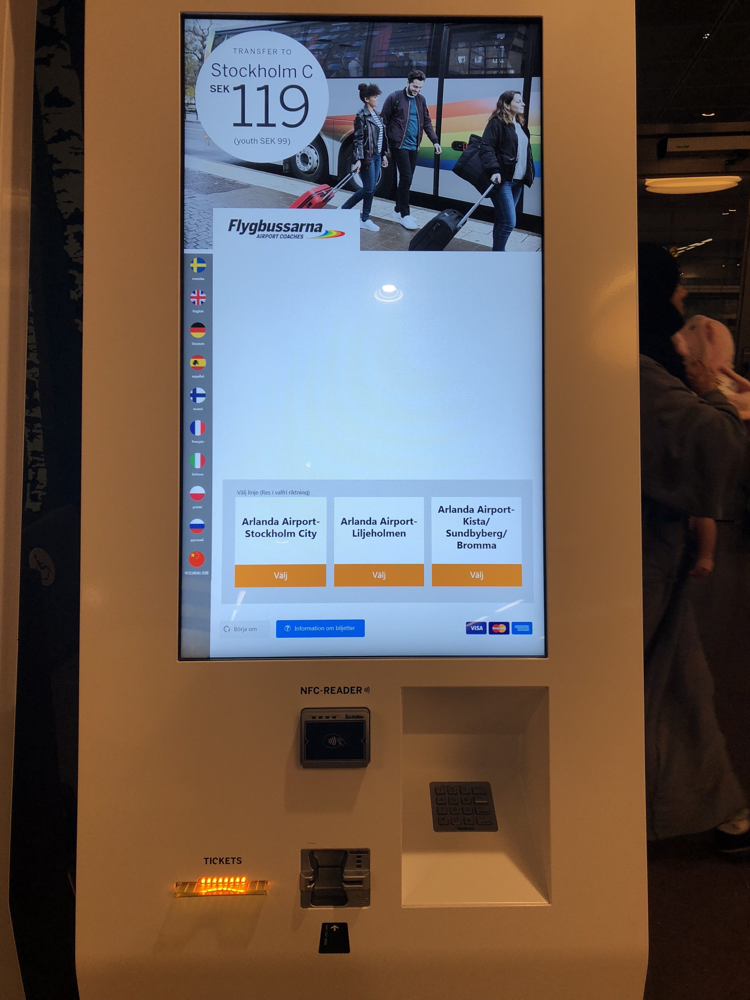
写真2.バスのチケットを購入するためにはカードが必要だ
自分が泊まった市内のホステルもカード決済しか受け付けていなかった。また市場にある花屋さん、観光名所の入場料やトイレの利用料金までもがカード決済可能だ。「電子決済総覧」によれば、スウェーデンでは2015年の1人当たりのカード利用回数は290回。EU平均が103回であることを考えるとダントツである*1。
ほとんどのお店の決済端末では、オーストラリア同様NFCを用いた非接触決済が普及しており、少額の支払いでもこの非接触決済が可能であった。また、訪れた全てのお店では決済端末がお客側に向いており、店員にカードを渡すことなく決済ができるため安心して使用できた。
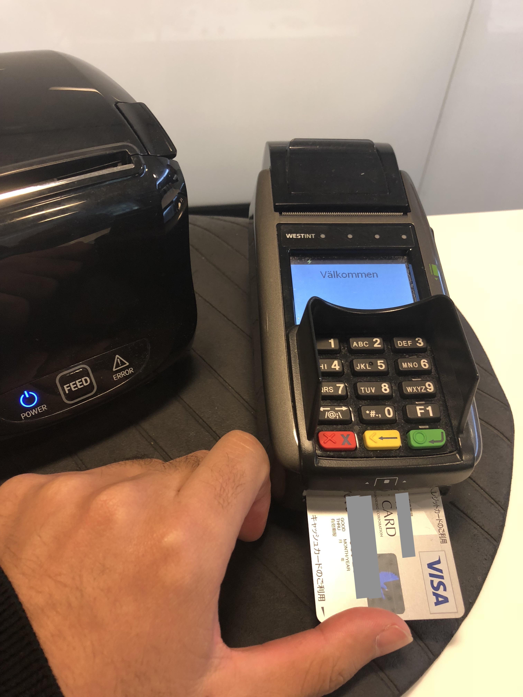
写真3.トイレの入場料もカード決済可能
1.2 現金では乗れない地下鉄
交通手段もキャッシュレスだ。ほとんどの券売機は現金お断りであり、市民はSuicaのような交通系ICカードを利用していた。この交通系ICカードへのチャージは、券売機にてクレジット・デビットカードを利用して楽に行うことができる。
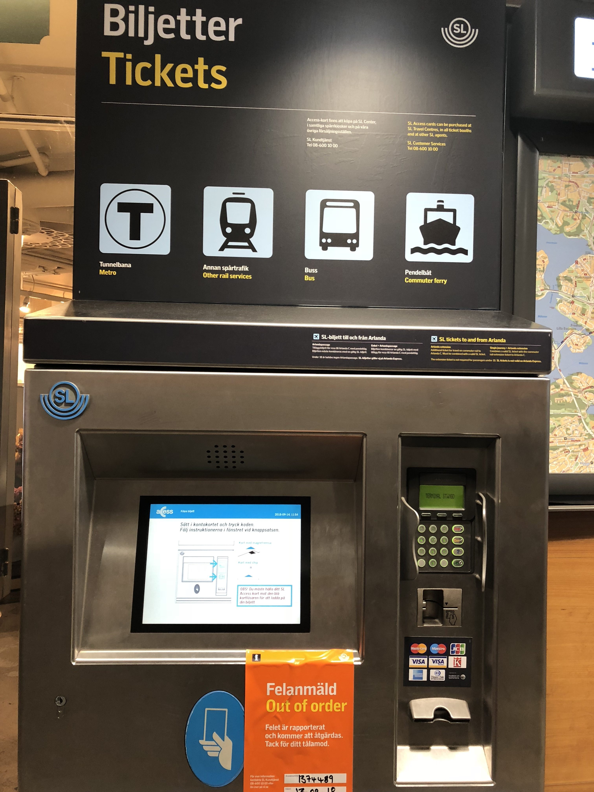
写真4.券売機には現金を入れる場所がない
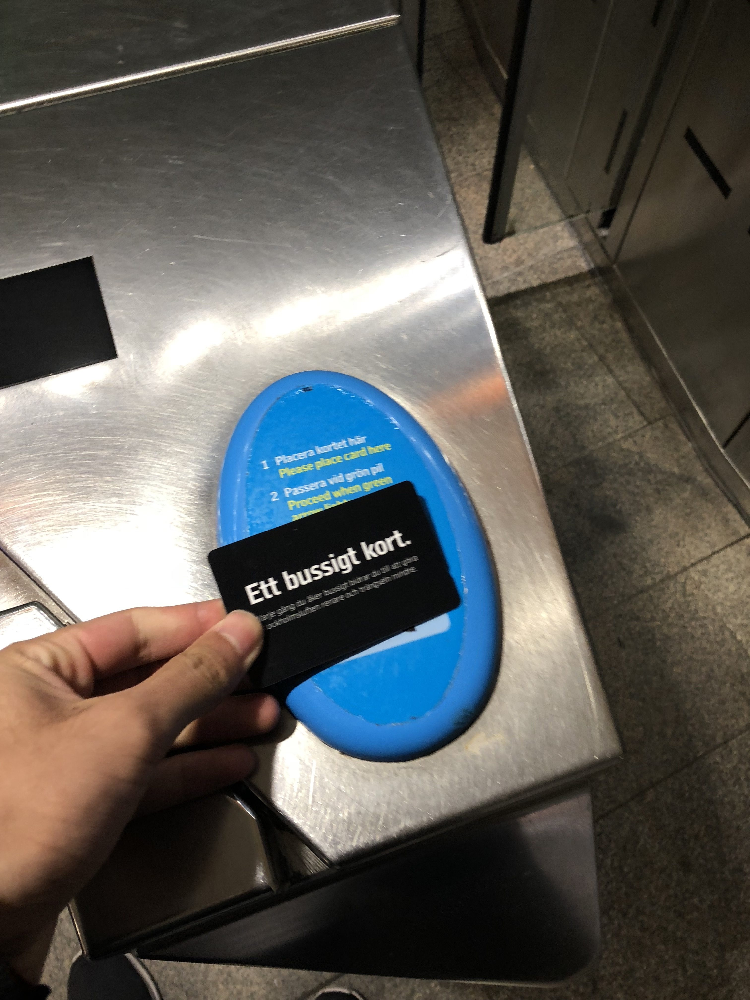
写真5.交通系ICカード
近年では、アプリを利用すればさらに簡単に決済可能になっている。アプリで電車などのチケットを購入するとQRコードが表示され、それを入場ゲートにかざすだけで乗車できる。アプリを利用すれば、後述するSwishでの決済も可能だ。
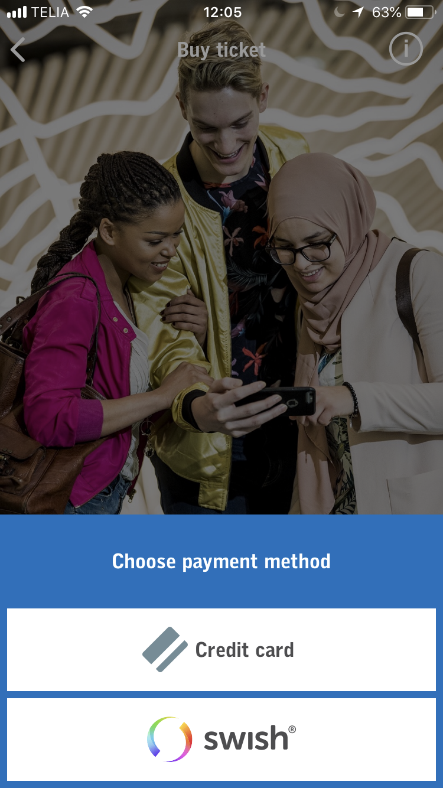
写真6.電車などのチケットはアプリで購入可能であった
1.3 なぜスウェーデンはキャッシュレスなのか
中国やオーストラリアなどでキャッシュレスが広まった要因は、偽札問題やATMコストなど多々あるが、スウェーデンではこれらとは少し違った要因があるかもしれない。「電子決済総覧」によれば、スウェーデンのキャッシュレスが進んだ要因の一つとして、「人口密度が低い」ことが挙げられている。広い国土の中に人が点在し、さらに冬が長く降雪量も多い気候条件ということもあり、現金運搬など現金運用に伴うコストが高くなるのだ。そのコスト削減の策がキャッシュレスサービスの増加であり、銀行なども積極的にキャッシュレス決済を広めていったのだろう。
若者の90％以上が利用している個人間送金サービス「Swish」
2.1友人から家族まで 幅広く送金可能
カード決済が普及することで生じる問題もある。例えば会計時の割り勘だ。現金であれば、数人まとめての会計では代表者が支払い、後で割った金額を徴収することができるが、カード払いであると決済のシステム上難しくなる。その問題を解決するためにスウェーデンで使われているのが「Swish」だ。
Swishはスウェーデンの大手銀行が共同で開発したアプリで、2012年12月にサービスが開始された。このSwishは銀行が開発したこともあり、利用金額は即時に銀行口座に反映されるという特徴がある。また利用時には、アカウントではなく携帯電話番号で送金相手を指定することができるので、アプリ上の友人以外にも素早く送金が可能となる。
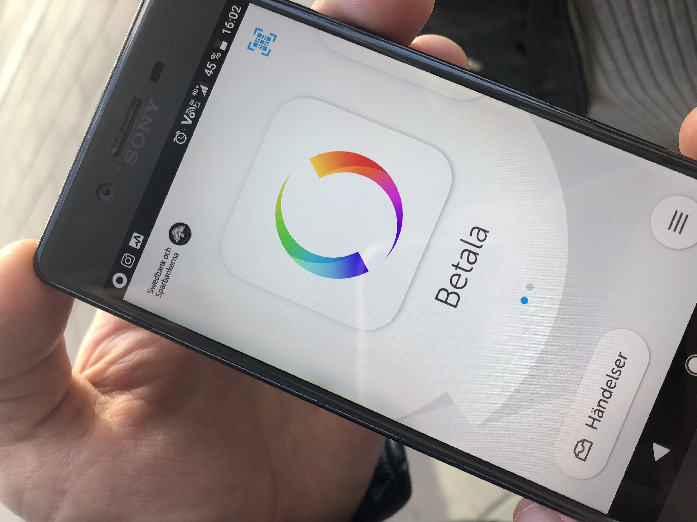
写真7.Swishのアプリ画面
このアプリはとにかく利用者数が多い。2017年10月末のSwish利用者は597万人となっており、スウェーデンの総人口約1,000万人のうち約60%が利用している計算だ*2。
実際に町の若者20人に聞いてみたところ、20人全員がSwishを知っており、また全員が使用しているとの答えだった。
2.2 決済までの道のりは遠い
Swishの登録にはスウェーデンの銀行口座が必要となるため、実際に利用することはできなかった。そのため現地の方にお願いをして、Swishを使った決済を見せてもらえることになった。しかし実はこのSwish、個人間送金は得意であるが決済になると話は別となる。実際にSwish払いが可能な店舗はまだまだ限られており、対応している店舗を探すのに時間がかかった。市内のコンビニや珈琲店、ショッピングモール内で探してみたがどこも対応しておらず、唯一見つかったのが市内にあった露店のキオスクだけであった。
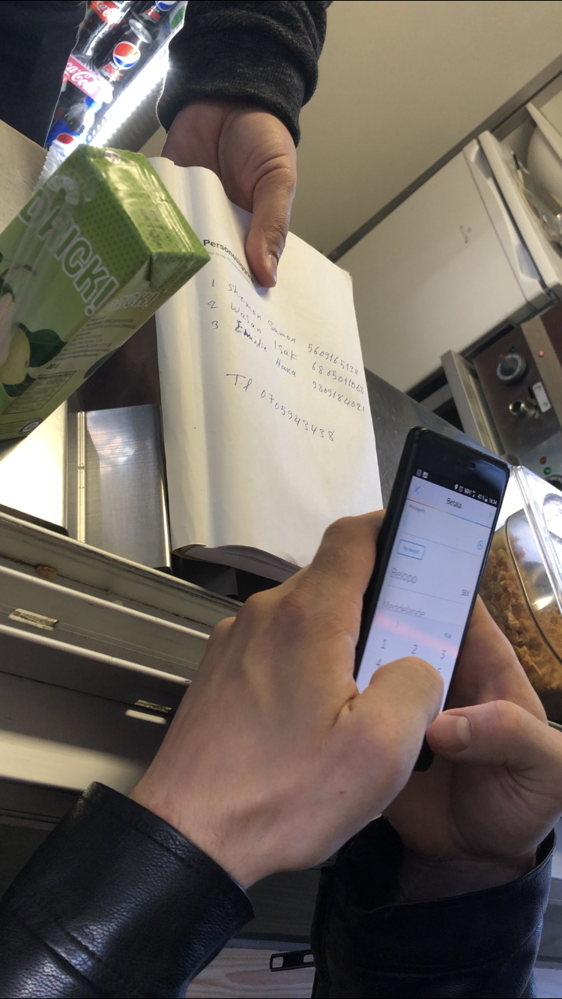
写真8.露店でのSwish利用の様子 Swishで払いたいと伝えると物置から決済用の電話番号が書かれた紙を提示してくれた
決済方法は非常に単純である。まず利用者は、店側のSwishに登録してある電話番号と支払い金額を入力する。そのあと、利用者のアプリ上で暗証番号などを入力すれば一瞬で決済が完了する。実際にSwishを利用して決済をしてもらったところ、通信速度はかなり早くスムーズに決済を行うことができた。ただ店側の電話番号は店の壁などに張り出されているわけではなく、1度聞いて見せてもらう必要があった。これに比べると、店の机や壁などにQRコードが設置されていた中国でのQRコード決済の方が楽に感じた。
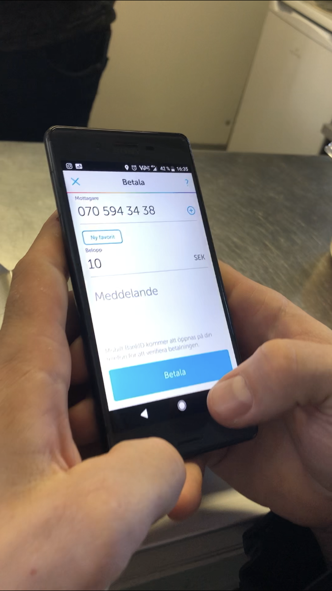
写真9.支払いの様子 電話番号と金額を入力するだけであった
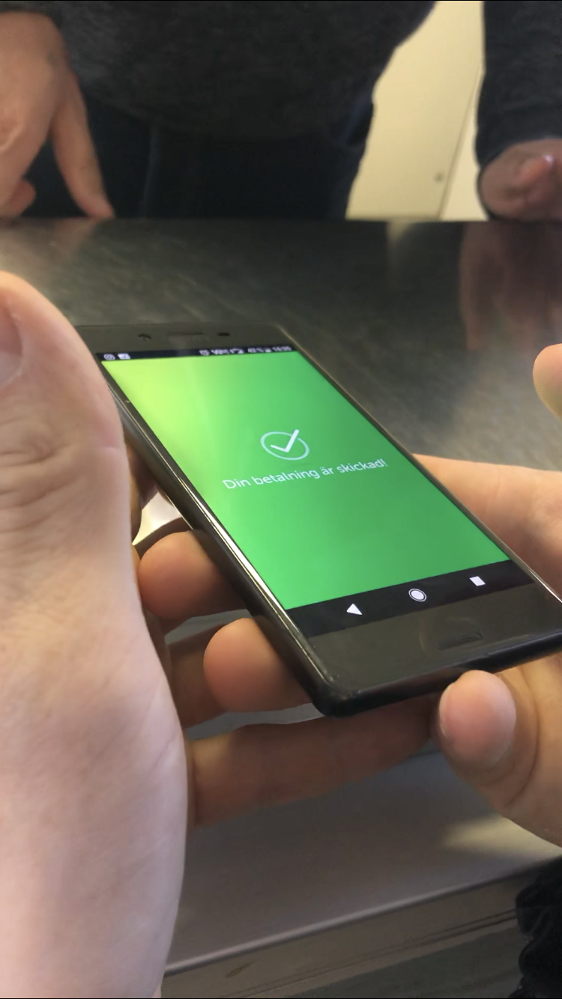
写真10.送金後のアプリ画面 送金はすぐ完了した
Swishの年間利用額は140億クローナ（約1,800億円）で、そのうち個人間送金は約90％、店舗での利用が7％、ECでの利用は4％となっており、やはり決済手段というよりは割り勘などの個人間送金手段として使われているようだ*2。
このSwishだが、日本のLINE Payや中国のWeChat Payと大きく違うのは、銀行口座に直接ひも付いている点である。また、Swish自体にはLINEやWeChatのようなコミュニケーションツールとしてのメッセージ機能はなく、送金時に送金の内容を数行送る程度であった。
以前、スウェーデンでは路上パフォーマーへの投げ銭にこのSwishを使っているというニュースを見たので、その様子を実際に調査した。しかし、ストックホルムの中心街で見かけた数人の路上パフォーマーたちはSwishを使っておらず、彼らの前には現金が置かれていた。
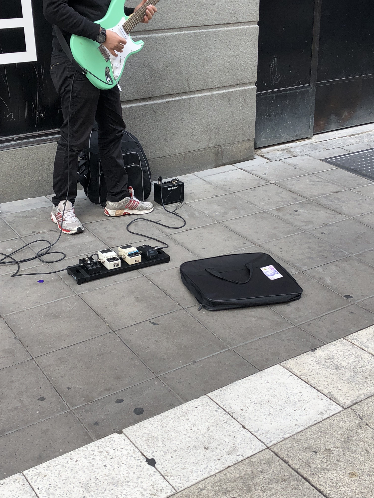
写真11.街中の路上パフォーマー Swish用の電話番号は提示されておらず、現金が置かれていた
バイオハッカーの存在
自分の手の甲にマイクロチップを入れる。そんなSF映画のような話が、ここスウェーデンでは実際に行われているらしい。
このバイオハック技術（テクノロジーを用いて体を改良する技術）が同国で最初に使われたのは2015年で、現在では3,000人以上の国民が手にマイクロチップを入れているバイオハッカーとなっているそうだ*3。その恩恵はさまざまで、例えばスウェーデン国営鉄道会社（SJ）では、切符代わりに手のチップをスキャンしてもらうことで乗車が可能だ。また、特定のジムやオフィスの鍵の代用などにも利用できる。
3.1 実際に調査してみると
そんな最先端を突き進んでいるバイオハッカーを見つけようと市内で聞き取りをしたが、見つからず。なぜなら意外と市内の方の意見は否定的で、「周りにチップを入れている人はいますか？」と聞いても、「いるわけないよ」という回答をいただくことが多かった。また、バイオハッカー自体の認知度もあまり高くなかった。
このバイオハックを提供している企業の本社にも向かったが、残念ながら閉まっており、実際に手にマイクロチップを入れている人に会うことはできなかった。
スウェーデンまとめ
確かにこの国では、現金決済が必須である機会はほとんどない。カードさえあれば生活ができる。また実際も、同国に約1,600ある銀行店舗のうち約900はすでに現金の運用を行っておらず、現金の引き出しも預け入れもできないそうだ*1。
しかしながら、現地では現金が無くなっていたわけではなかった。街中にはまだATMが設置されており、スーパーでは現金決済をしている人を見かけることができた。先述したように路上パフォーマーに対しても現金で投げ銭をしていた。
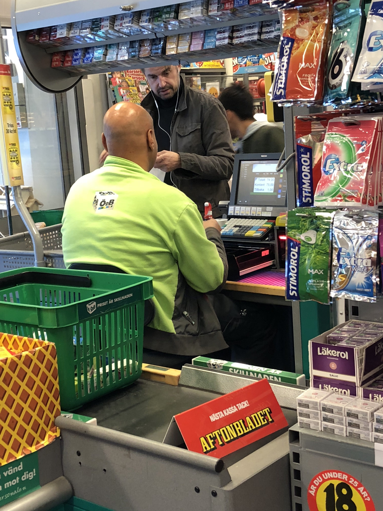
写真12.スーパーでは現金決済も見かけた
スーパーで現金決済をしていた方の多くは年配者だった。現金決済ができる場所が減っていくことは、スマートフォンなどを使わずに生活している方が取り残されてしまうことになるので、その辺りの問題をどう解決していくのか。キャッシュレスの最先端を走るこの国の今後に目が離せない。
次回第５弾は欧州２カ国目エストニアでのキャッシュレスについてです。IT大国と呼ばれるエストニアでは画期的なセルフレジやビットコインATMなど日本ではなかなか見ることのできないサービスを体験したのでその様子をまとめます！
参照記事
*1 電子決済総覧2017-2018 https://www.cardwave.jp/products/detail.php?product_id=82
*2 キャッシュレス・ビジョン
http://www.meti.go.jp/press/2018/04/20180411001/20180411001-1.pdf*3 Thousands of people in Sweden are embedding microchips under their skin to replace ID cards https://www.businessinsider.com/swedish-people-embed-microchips-under-skin-to-replace-id-cards-2018-5